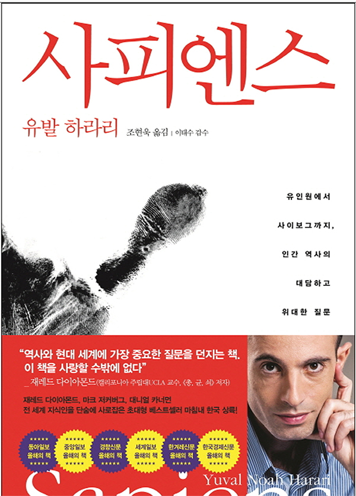
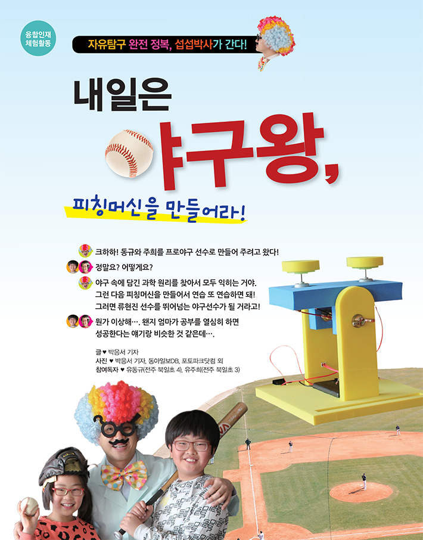
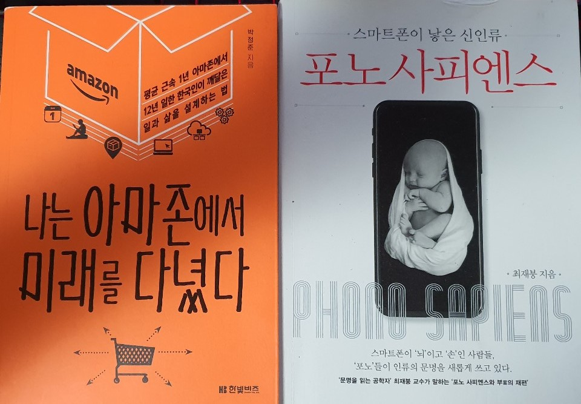

내 삶의 변화의 주범: 책
(↓엄마의 추천으로 고등학교와서 처음 읽은 책.
정말 쉽게 써져있어 비문학 책 추천해달라 할때마다 언급되는 책이다.
코스모스 같은 어려운 책으로시작했다면 아마 책을 읽지 않았을듯..)

책은 어렸을 때 부터 저와 친했습니다.
유치원 때도 받은상은 독서상이었고요.
엄마가 사오신 책중에 3번이하로 읽은책은 없었을겁니다.
그만큼 책읽기를 좋아해 티비도 안보고 책만 읽었습니다.
그랬더니 좋은 머리를 가지고 시력을 잃었어요...

과학책을 좋아해 과학동아의 열혈한 구독자였습니다.
과학을 좋아해 과학책을 읽은건지 과학책을 읽다보니 과학을 좋아한건지는 모르겠어요.
이덕에 제 진로칸은 항상 과학자 아니면 발명가였죠.
그때 책을 안읽었다면 지금보단 안 좋은 삶을 살았을꺼 같아요.
초6~중3 때는 책을 좀 멀리했습니다.
게임을 접하기도 했고, 그시기에 과학책은 너무 쉽거나 너무 어려웠어요.

↑내 삶의 변화의 주범들이다
거창하긴 하지만 나중에 자서전을 쓴다면 꼭 나올 책들입니다.
포노 사피엔스를 읽으면서 이렇게 수동적으로 살것인가,
이렇게 비전없이 살다간 내 재능이 버려지지 않을까?
이러한 질문들을 하며 제 진로에 대한 의구심과 고민을 시작했습니다.
그 다음 바로 읽은 책이 나는 아마존에서 미래를 다녔다 입니다.
포노 사피엔스에서 읽은 4차산업 혁명의 표본이 아마존이구나!
비전있는 사람이 될려면 이런 마인드를 배워야겠다. 이런 생각을 했습니다.
이 코딩도 아마존의 혁명적인 시스템은 코딩에서 나왔구나 해서 시작했습니다.
아마 커서 명언을 남긴다면 이럴거 같네요.
어렸을 때 부터 지금까지, 또 나중에도 내 인생이 변한다면 그 주범은 책이다.